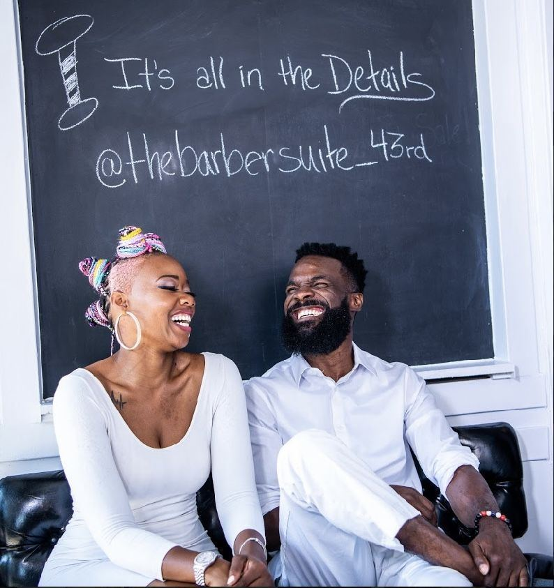

Like family

A clean, friendly, professional shop on E 43rd St. Families bring their kids here, regulars call Peaches and O the best barbers on the South Side, and Kels learned the craft from his mother.

A clean, friendly, professional shop on E 43rd St. Families bring their kids here, regulars call Peaches and O the best barbers on the South Side, and Kels learned the craft from his mother.